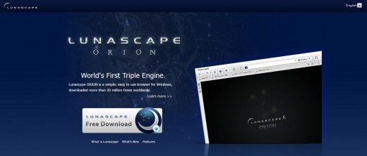
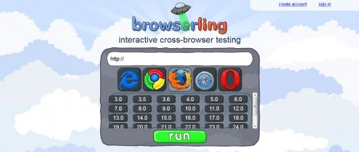
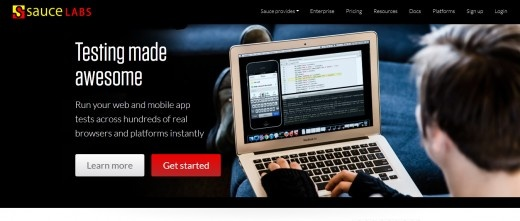
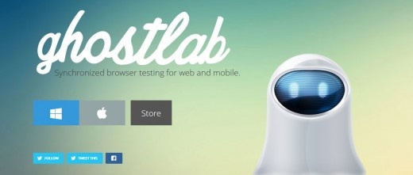

1. Browsera
Browsera 可以测试和报告在您的网站上的跨浏览器布局的差异和脚本错误。
Browsera不同于其他跨浏览器测试服务。其他服务，如Litmus，Browsershots，BrowserLab，以及 SuperPreview，它们仅仅截取每一个特定的页面，你必须具体再分析才行。
{kind=link}
2. BrowserStack
BrowserStack提供实时的，基于Web的浏览器测试的能力。
可以即时访问每个桌面和移动浏览器（目前超过300个），具有在内部服务器进行本地测试的能力，并且提供一个安全的设置。

3. Lunascape
Lunascape是一款免费的三重引擎的浏览器。
这意味着，你可以用三叉戟（IE），蛤蚧（火狐）和Webkit（Chrome和Safari）运行和测试一个新的网站，并且可以排在一起比较渲染引擎的效果。

{kind=link}
4. CrossBrowserTesting
CrossBrowserTesting允许用户与超过100分辨率/浏览器/操作系统组合，测试他们的网站。
它还为移动网络浏览器提供重要的支持，因为现在的互联网流量正从主要的桌面电脑用户向移动用户进行转移。

5. Browserling
Browserling和Testling作为我们部署测试流程的一部分，是基于我们公布的JavaScript库的PubNub JavaScript的用户群。
这可以对快速测试所有的JavaScript环境提供一流的服务。

{kind=link}
6. Browsershots
Browsershots可以为你设计的网页在不同的操作系统和浏览器中进行屏幕截图。
这是一个免费开源的在线Web应用程序，开发人员提供了一个简单方法来测试在他们的网站在一个地方的浏览器兼容性。
{kind=link}
7. Litmus
Litmus 提供跨浏览器网页测试，而且可以发送到你电子邮件进行预览。
只要填写一个网址，它就会告诉你怎样适应当下流行的Web浏览器。
{kind=link}
8. Spoon
Spoon 是一个很好的资源，它可以让你实时使用最流行的浏览器测试你的网站，包括Opera，火狐，Chrome和Safari等。
不过IE浏览器是不允许的，因为微软不提供许可。
{kind=link}
9. Sauce Labs
Sauce Labs 提供了一个相当独特的跨浏览器测试体验。
它并不是简单地把你的网站在不同的浏览器进行截图，而是室可以让你记录你网站的实时测试效果。

{kind=link}
10. Ghostlab
Ghostlab提供同步测试滚动，点击，重新加载等，并形成信息输入到所有的连接设备，这意味着你可以测试整个用户体验，而不仅仅是一个简单的页面。

{kind=link}
总结：
可能很多WEB开发者较少用到专业的浏览器测试工具。
大都是用个ieTest加上火狐和chrome就搞定一切了，多了也就是用个在线网页测试工具，一些细微的兼容性测试也是自己慢慢修改，费时又耗力。
想要确保代码在各种主流浏览器的各个版本中都能正常工作，建议还是用一下上面提供的这些浏览器兼容性测试工具吧，应该能够事半功倍！